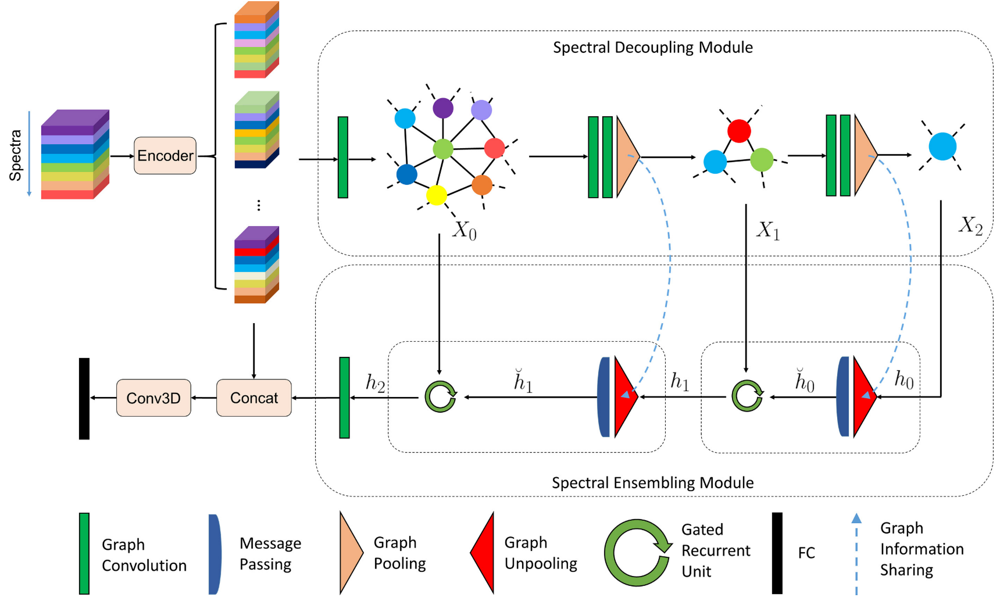
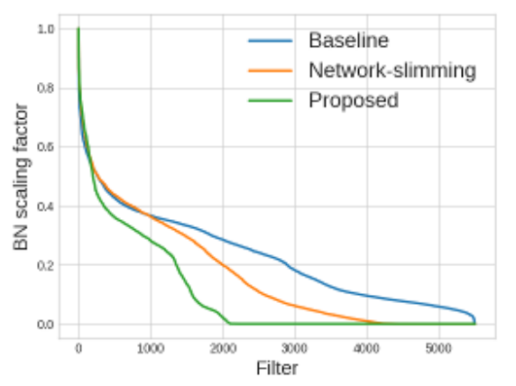
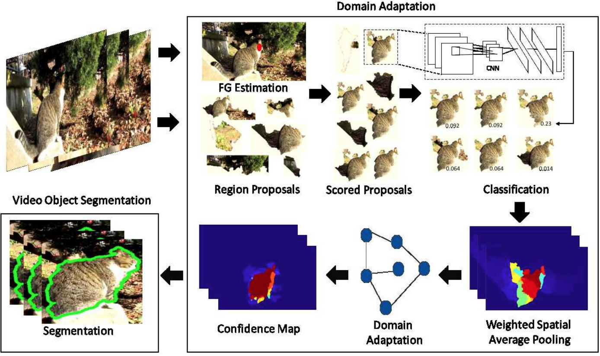
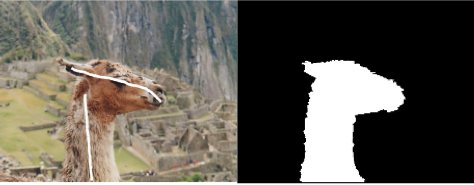

|
I am a Postdoctoral Researcher in the Robot Learning Lab of Aalto University. I did my PhD in the Robot Learning Lab of Aalto University and Computer Vision Group of Tampere University, supervised by Prof. Joni Pajarinen and Prof. Joni Kämäräinen. My recent research mainly explores novel algorithms for Hierarchical Reinforcement Learning, which aim to enable reinforcement learning to tackle complex problems with long-term credit assignment and sparse rewards. I am also interested in applying machine learning in solving 2D/3D computer vision problems, such as 3D object segmentation, semantic video segmentation and hyperspectral image classification. During 2015-2016, I worked as research assistant in Deep Learning and Bayesian Modeling group of Aalto University, supervised by Prof. Tapani Raiko and Prof. Juha Karhunen. I worked as research intern in Nokia Research Center in 2014. I have published on top venues such as AAAI, IJCAI, ICASSP, CVIU and one US patent in the related fields, and received one IEEE best paper award in ICME 2015. My research publications in collaboration with Nokia scientists have won Nokia Labs Award in 2016 and 2017. I serve as PC Member of AAAI 2020/2021/2022/2023, NeurIPS 2022/2023 and ICML 2022/2023 etc. Email / Google Scholar / Github / LinkedIn |
{kind=link}
|
I'm generally interested in reinforcement learning, deep learning, 2D/3D computer vision. Selected papers and patent are listed as follows. Full list of publications can be found in my Google Scholar page. |

|
Vivienne Huiling Wang, Joni Pajarinen, Tinghuai Wang, Joni-Kristian Kämäräinen Thirty-Seventh AAAI Conference on Artificial Intelligence (AAAI-23), 2023 We propose a novel adversarially guided subgoal generation framework for goal-conditioned HRL to mitigate the issue of non-stationarity in off-policy training. |
|  |
Huiling Wang International Conference on Artificial Neural Networks (ICANN), 2020 We propose a novel recurrent graph neural network to tackle hyperspectral image classification problem. |
|  |
Tinghuai Wang, Lixin Fan, Huiling Wang International Conference on Artificial Neural Networks (ICANN), 2019 We propose a novel pruning loss to explicitly enforces the optimizer to focus on promising candidate filters while suppressing contributions of less relevant ones. In the meanwhile, we further propose to enforce the diversities between filters and this diversity-based regularization term improves the trade-off between model sizes and accuracies. |
|
Huiling Wang, Tinghuai Wang, Ke Chen, Joni-Kristian Kämäräinen International Joint Conference on Artificial Intelligence (IJCAI), 2017 pdf / video We address semantic video object segmentation via a novel cross-granularity hierarchical graphical model to integrate tracklet and object proposal reasoning with superpixel labeling. |
|

|
Huiling Wang, Tinghuai Wang Computer Vision and Image Understanding (CVIU), 2016 We present a novel algorithm that detects recurring primary object and learns cohort object proposals over space-time in video. Our core contribution is a graph transduction process that exploits both appearance cues learned from rudimentary detections of object-like regions, and the intrinsic structures within video data. |
|  |
Huiling Wang, Tapani Raiko, Lasse Lensu, Tinghuai Wang, Juha Karhunen Asian Conference on Computer Vision (ACCV), 2016 We propose a semi-supervised approach to adapting CNN image recognition model trained from labeled image data to the target domain exploiting both semantic evidence learned from CNN, and the intrinsic structures of video data. |

|
Huiling Wang, Tinghuai Wang International Conference on Acoustics, Speech, and Signal Processing (ICASSP), 2016 pdf / video #1 / video #1 This paper presents a method to detect and segment recurring object from multi-view images. By harnessing a top-down explicit notion of object, our method overcomes the limitations of previous bottom-up methods that often mis-segment an object and de- livers high quality segmentation. |

|
Tinghuai Wang, Huiling Wang, Lixin Fan Neurocomputing, 2015 We combine geodesic distance information with the flexibility of level set methods in energy minimization, leveraging the complementary strengths of each to promote accurate boundary placement and strong region connectivity while requiring less user interaction. |
|  |
Tinghuai Wang, Huiling Wang, Lixin Fan International Conference on Multimedia and Expo (ICME), 2015 We present a a robust and efficient approach for segmenting images with less and intuitive user interaction, particularly targeted for mobile touch screen devices. |
|
|
|
Reviewer, NeurIPS 2022-2023
Reviewer, ICML 2022-2023 Program Committee, AAAI 2020-2023 Program Commitee, ICANN 2020-2021 |